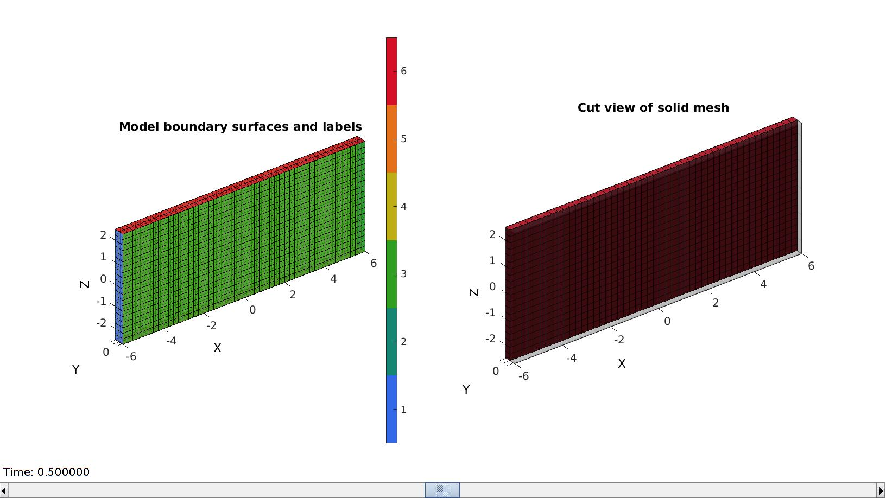
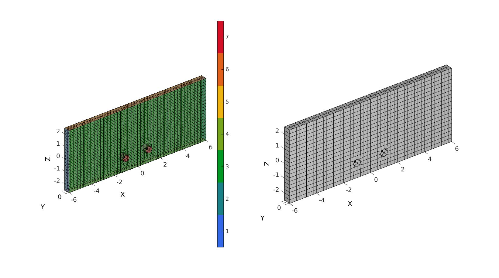
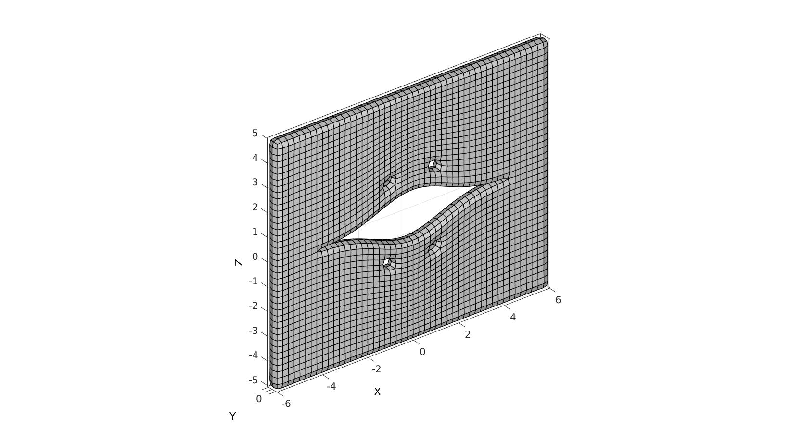
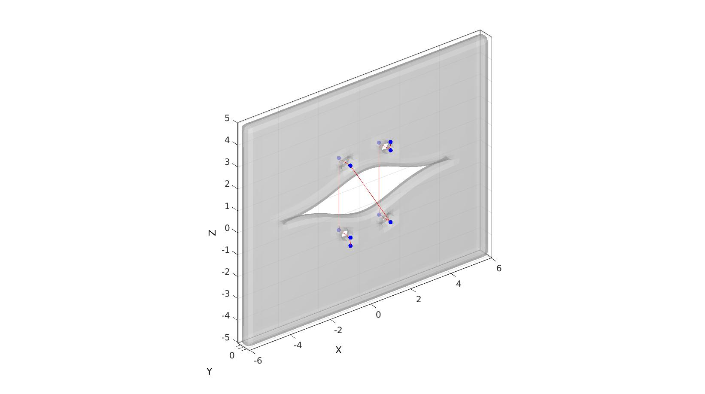
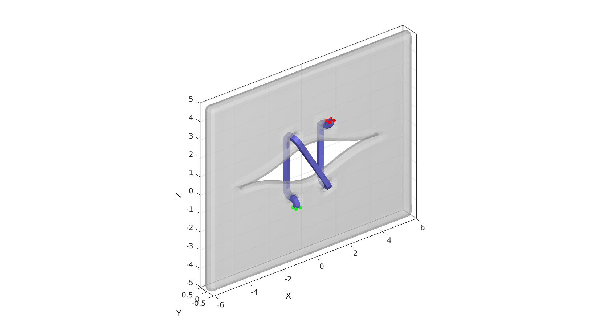
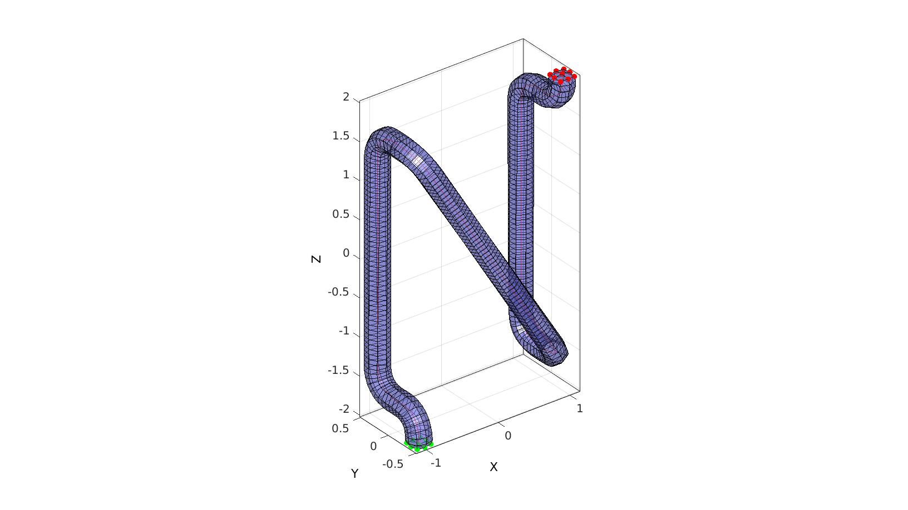
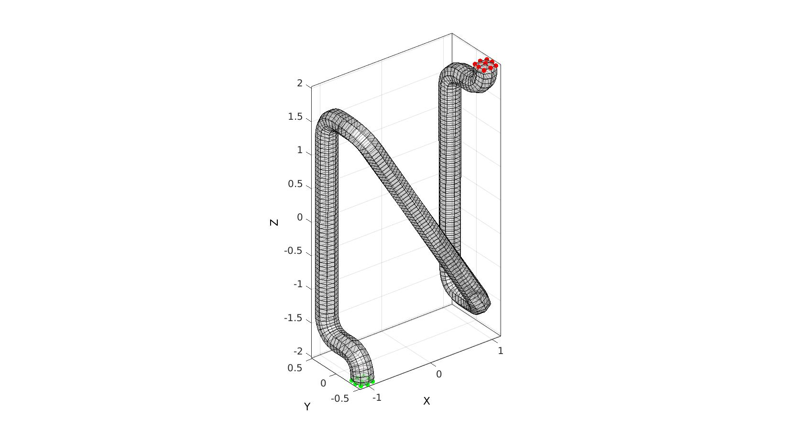
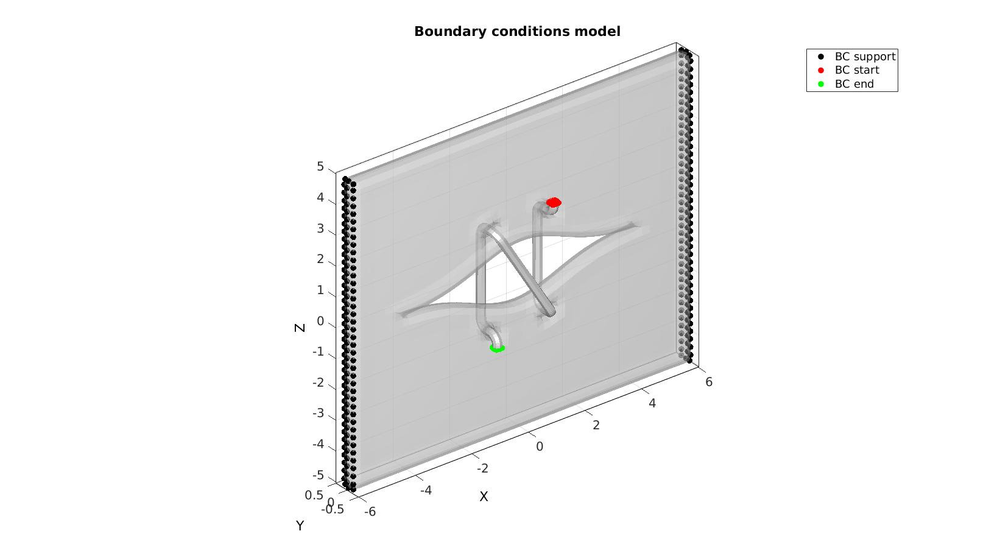
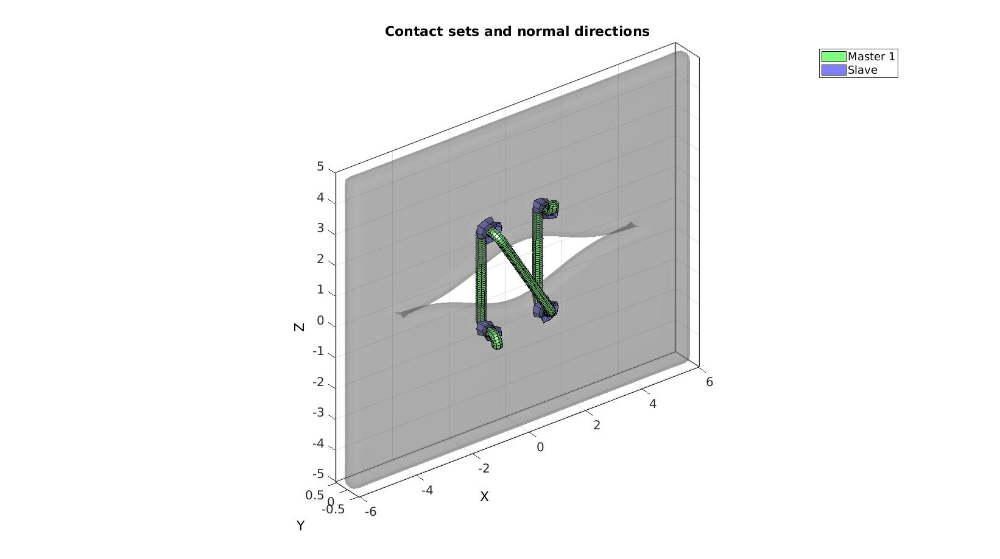
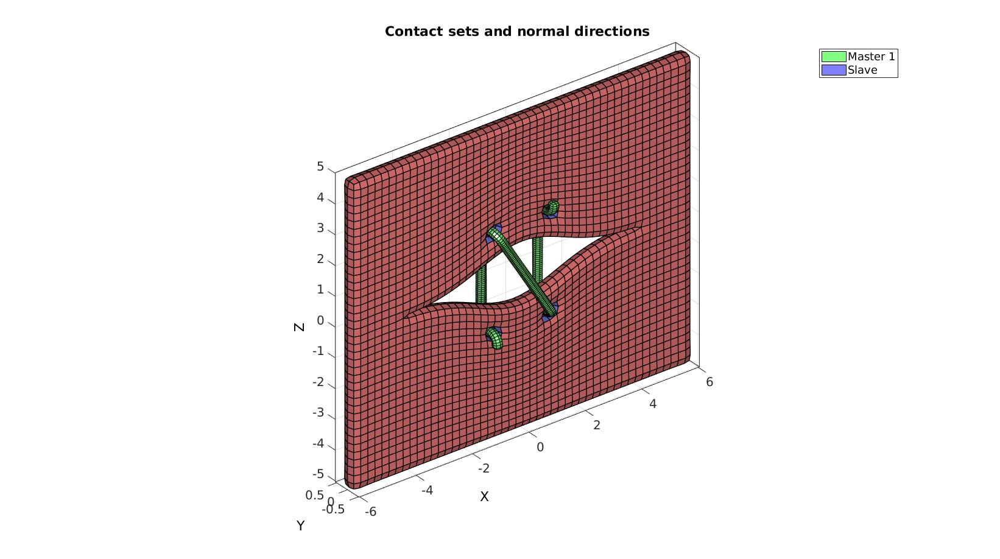

DEMO_febio_0048_slab_stitch_01.m
Below is a demonstration for:
- Building geometry for a slab with holes consisting of hexahedral elements
- Defining the boundary conditions
- Coding the febio structure
- Running the model
- Importing and visualizing the displacement results
Contents
Keywords
- febio_spec version 2.5
- febio, FEBio
- indentation
- contact, sliding, sticky, friction
- rigid body constraints
- hexahedral elements, hex8
- triangular elements, tri3
- slab, block, rectangular
- sphere
- static, solid
- hyperelastic, Ogden
- displacement logfile
- stress logfile
clear; close all; clc;
Plot settings
fontSize=15; faceAlpha1=0.8; faceAlpha2=0.3; markerSize=25; lineWidth=3;
Control parameters
% Path names defaultFolder = fileparts(fileparts(mfilename('fullpath'))); savePath=fullfile(defaultFolder,'data','temp'); % Defining file names febioFebFileNamePart='tempModel'; febioFebFileName=fullfile(savePath,[febioFebFileNamePart,'.feb']); %FEB file name febioLogFileName=fullfile(savePath,[febioFebFileNamePart,'.txt']); %FEBio log file name febioLogFileName_disp=[febioFebFileNamePart,'_disp_out.txt']; %Log file name for exporting displacement febioLogFileName_force=[febioFebFileNamePart,'_force_out.txt']; %Log file name for exporting force displacementMagnitude=0.5; %Material parameter set c1_1=1e-3; %Shear-modulus-like parameter m1_1=2; %Material parameter setting degree of non-linearity k_1=c1_1*20; %Bulk modulus c1_2=c1_1*10; %Shear-modulus-like parameter m1_2=2; %Material parameter setting degree of non-linearity k_2=c1_2*20; %Bulk modulus % FEA control settings numTimeSteps=250; %Number of time steps desired max_refs=50; %Max reforms max_ups=0; %Set to zero to use full-Newton iterations opt_iter=10; %Optimum number of iterations max_retries=5; %Maximum number of retires dtmin=(1/numTimeSteps)/100; %Minimum time step size dtmax=1/numTimeSteps; %Maximum time step size symmetric_stiffness=0; min_residual=1e-20; %Contact parameters contactAlg=5; contactPenalty=0.01; laugon=0; minaug=1; maxaug=10; fric_coeff=0.1; search_tol=0.01; search_radius=0.01; switch contactAlg case 1 contactType='sticky'; case 2 contactType='facet-to-facet sliding'; case 3 contactType='sliding_with_gaps'; case 4 contactType='sliding2'; case 5 contactType='sliding-elastic'; case 6 contactType='none'; end %Specifying dimensions and number of elements pointSpacing=0.25; pointSpacingWire=pointSpacing/2; sampleWidth=12; %Width sampleThickness=pointSpacing*2; %Thickness sampleHeight=5; %Height pointSpacings=pointSpacing*ones(1,3); %Desired point spacing between nodes numElementsWidth=round(sampleWidth/pointSpacings(1)); %Number of elemens in dir 1 numElementsThickness=round(sampleThickness/pointSpacings(2)); %Number of elemens in dir 2 numElementsHeight=round(sampleHeight/pointSpacings(3)); %Number of elemens in dir 3 A=1; S=1.5; radiusFillet=sampleThickness/2; stentSectionWidth=pointSpacing;
Creating model geometry and mesh
A box is created with tri-linear hexahedral (hex8) elements using the hexMeshBox function. The function offers the boundary faces with seperate labels for the top, bottom, left, right, front, and back sides. As such these can be used to define boundary conditions on the exterior.
% Create a box with hexahedral elements cubeDimensions=[sampleWidth sampleThickness sampleHeight]; %Dimensions cubeElementNumbers=[numElementsWidth numElementsThickness numElementsHeight]; %Number of elements outputStructType=2; %A structure compatible with mesh view [meshStruct]=hexMeshBox(cubeDimensions,cubeElementNumbers,outputStructType); %Access elements, nodes, and faces from the structure E=meshStruct.elements; %The elements V=meshStruct.nodes; %The nodes (vertices) Fb=meshStruct.facesBoundary; %The boundary faces Cb=meshStruct.boundaryMarker; %The "colors" or labels for the boundary faces elementMaterialIndices=ones(size(E,1),1); %Element material indices
Plotting model boundary surfaces and a cut view
hFig=cFigure; subplot(1,2,1); hold on; title('Model boundary surfaces and labels','FontSize',fontSize); gpatch(Fb,V,Cb,'k',faceAlpha1); colormap(gjet(6)); icolorbar; axisGeom(gca,fontSize); hs=subplot(1,2,2); hold on; title('Cut view of solid mesh','FontSize',fontSize); optionStruct.hFig=[hFig hs]; meshView(meshStruct,optionStruct); axisGeom(gca,fontSize); drawnow;
Vc=[S*0.75 0 -sampleHeight/2+A*1.1];
[~,indMin]=minDist(Vc(:,[1 3]),V(:,[1 3]));
Vcc=V(indMin,:);
Vcc(:,2)=0;
Vcc2=Vcc;
Vcc2(:,1)=-Vcc2(:,1);
Vcc=[Vcc;Vcc2];
D=minDist(V(:,[1 3]),Vcc(:,[1 3]));
logicRemove_V=D<=pointSpacing/2;
logicKeep_E=~any(logicRemove_V(E),2);
E=E(logicKeep_E,:);
[E,V,indFix]=patchCleanUnused(E,V);
Fb=indFix(Fb);
logicValid=all(Fb>0,2);
Fb=Fb(logicValid,:);
Cb=Cb(logicValid,:);
F=element2patch(E);
indBoundary=tesBoundary(F,V);
Fb_all=F(indBoundary,:);
logicNew=~all(ismember(Fb_all,Fb),2);
Fb=[Fb;Fb_all(logicNew,:)];
Cb=[Cb;(max(Cb(:))+1)*ones(nnz(logicNew),1)];
cPar.n=5;
cPar.Method='HC';
[Vn]=patchSmooth(Fb(Cb==max(Cb(:)),:),V,[],cPar);
indSmooth=unique(Fb(Cb==max(Cb(:)),:));
V(indSmooth,[1 3])=Vn(indSmooth,[1 3]);
cFigure; subplot(1,2,1); hold on; gpatch(Fb,V,Cb,'k',0.5); plotV(Vcc,'k.','MarkerSize',25); colormap(gca,gjet(250)); icolorbar; axisGeom(gca,fontSize); camlight headlight; subplot(1,2,2); hold on; gpatch(F,V,'w','k',1); plotV(Vcc,'k.','MarkerSize',25); axisGeom(gca,fontSize); camlight headlight; drawnow;
T=-V(:,3); minT=min(T(:)); T=T-minT; maxT=max(T(:)); T=T./maxT; x=V(:,1); G=A*exp(-(x.^2)./(2*S^2)); G(G<pointSpacing/10)=0; V(:,3)=V(:,3)+(G.*T); minV=min(V(:,3)); V(:,3)=V(:,3)-min(V(:,3));
Visualize map
cFigure; hold on; gpatch(Fb,V,T,'k',faceAlpha1); colormap viridis; colorbar; axisGeom(gca,fontSize); drawnow; cFigure; hold on; gpatch(Fb,V,T,'k',faceAlpha1); colormap viridis; colorbar; axisGeom(gca,fontSize); drawnow;


T=-Vcc(:,3); T=T-minT; T=T./maxT; x=Vcc(:,1); G=A*exp(-(x.^2)./(2*S^2)); G(G<pointSpacing/10)=0; Vcc(:,3)=Vcc(:,3)+(G.*T); Vcc(:,3)=Vcc(:,3)-minV;
E=[E;E(:,[5 6 7 8 1 2 3 4])+size(V,1);]; Fb=[Fb;fliplr(Fb)+size(V,1);]; Cb=[Cb;Cb]; V2=V; V2(:,3)=-V2(:,3); V=[V;V2]; F=element2patch(E); [F,V,~,ind2]=mergeVertices(F,V); E=ind2(E); Fb=ind2(Fb); [~,ind1,ind2,faceCount]=cunique(sort(Fb,2),'rows'); Fb=Fb(faceCount==1,:); Cb=Cb(faceCount==1,:); cPar.n=5; cPar.Method='HC'; [Vn]=patchSmooth(Fb,V,[],cPar); indSmooth=unique(Fb); V(indSmooth,:)=Vn(indSmooth,:);
cFigure; hold on; gpatch(Fb,V,'w','k',1,1); axisGeom(gca,fontSize); camlight headlight; drawnow;
Vp1=Vcc(1,:); Vp2=Vcc(2,:); Vp3=Vcc(2,:); Vp3(:,3)=-Vp3(:,3); Vp4=Vcc(1,:); Vp4(:,3)=-Vp4(:,3); w=1.5*radiusFillet; Vg2=Vp1; Vg2(:,2)=Vg2(:,2)-w; Vg1=Vg2; Vg1(:,3)=Vg1(:,3)+w; Vg3=Vp1; Vg3(:,2)=Vg3(:,2)+w; Vg4=Vp4; Vg4(:,2)=Vg4(:,2)+w; Vg5=Vp4; Vg5(:,2)=Vg5(:,2)-w; Vg6=Vp2; Vg6(:,2)=Vg6(:,2)-w; Vg7=Vp2; Vg7(:,2)=Vg7(:,2)+w; Vg8=Vp3; Vg8(:,2)=Vg8(:,2)+w; Vg9=Vp3; Vg9(:,2)=Vg9(:,2)-w; Vg10=Vg9; Vg10(:,3)=Vg10(:,3)-w; Vg=[Vg1;Vg2;Vg3;Vg4;Vg5;Vg6;Vg7;Vg8;Vg9;Vg10]; numRad=round((pi/2*radiusFillet)/pointSpacingWire); %Number of points used to construct each fillet edge [VG]=filletCurve(Vg,radiusFillet,numRad,0); numPoints=round(max(pathLength(VG))/pointSpacingWire); VG=evenlySampleCurve(VG,numPoints,'pchip',0); cFigure; hold on; gpatch(Fb,V,'w','none',0.5,1); plotV(Vg,'b.','MarkerSize',25); plotV(VG,'r-','MarkerSize',25); axisGeom(gca,fontSize); camlight headlight; drawnow;
% The rectangular stent wire section is created here. V_section=[-stentSectionWidth/2 stentSectionWidth/2 0; ... stentSectionWidth/2 stentSectionWidth/2 0; ... stentSectionWidth/2 -stentSectionWidth/2 0; ... -stentSectionWidth/2 -stentSectionWidth/2 0; ... ]; % R=euler2DCM([0.5*pi 0 0]); % V_section=V_section*R;
V_section1=V_section+VG(1,:); V_section2=V_section+VG(end,:); n3=[0 0 1]; numTwist=0; %Number of additional twists of loft feature around guide curve numStepsSweep=size(VG,1); %Number of steps for loft feature from sketch 1 to sketch 2 plotOn=0; %Turn on plotting to view lofting behaviour [~,~,~,S]=sweepLoft(V_section1,V_section2,n3,n3,VG,numStepsSweep,numTwist,plotOn); X=S.X'; Y=S.Y'; Z=S.Z'; %Coordinate matrices Vw=[X(:) Y(:) Z(:)]; %Create node list Fw=reshape((1:1:size(Vw,1)),4,size(Vw,1)/4)'; %All top and bottom faces Ew=[Fw(1:end-1,:) Fw(2:end,:)]; %The hexahedral elements Fw=element2patch(Ew); %Create face data for plotting indBoundaryFaces_w=tesBoundary(Fw,V); Fwb=Fw(indBoundaryFaces_w,:); indStart=1:size(V_section,1); indEnd=size(Vw,1)-size(V_section,1)+1:size(Vw,1);
cFigure; hold on; gpatch(Fb,V,'w','none',0.5,1); gpatch(Fwb,Vw,'bw','none',1,1); plotV(VG,'r-','MarkerSize',25); plotV(Vw(indStart,:),'r.','MarkerSize',25); plotV(Vw(indEnd,:),'g.','MarkerSize',25); axisGeom(gca,fontSize); camlight headlight; drawnow;
[Ew,Vw]=subHex(Ew,Vw,1,1); Fw=element2patch(Ew); %Create face data for plotting indBoundaryFaces_w=tesBoundary(Fw,Vw); Fwb=Fw(indBoundaryFaces_w,:); cPar.n=5; cPar.Method='HC'; [Vn]=patchSmooth(Fwb,Vw,[],cPar); indSmooth=unique(Fwb); Vw(indSmooth,:)=Vn(indSmooth,:);
F_sections=[Ew(:,[1 2 3 4]); Ew(:,[5 6 7 8]); ]; edgeSet=patchEdges(F_sections,V); logicMember=any(ismember(edgeSet,indStart),2); indStart=unique(edgeSet(logicMember,:)); logicMember=any(ismember(edgeSet,indStart),2); indStart=unique(edgeSet(logicMember,:)); logicMember=any(ismember(edgeSet,indEnd),2); indEnd=unique(edgeSet(logicMember,:)); logicMember=any(ismember(edgeSet,indEnd),2); indEnd=unique(edgeSet(logicMember,:));
cFigure; hold on; % gpatch(Fb,V,'w','none',0.5,1); gpatch(Fwb,Vw,'bw','k',0.5,1); % gpatch(edgeSet,Vw,'rw','r',1,2); plotV(VG,'r-','MarkerSize',25); plotV(Vw(indStart,:),'r.','MarkerSize',25); plotV(Vw(indEnd,:),'g.','MarkerSize',25); axisGeom(gca,fontSize); camlight headlight; drawnow;
cFigure; hold on; gpatch(Fwb,Vw,'w','k',0.5,1); plotV(Vw(indStart,:),'r.','MarkerSize',25); plotV(Vw(indEnd,:),'g.','MarkerSize',25); axisGeom(gca,fontSize); camlight headlight; drawnow;
Joining node sets
Ew=Ew+size(V,1);
Fw=Fw+size(V,1);
Fwb=Fwb+size(V,1);
indStart=indStart+size(V,1);
indEnd=indEnd+size(V,1);
V=[V;Vw;]; %Combined node sets
Define boundary conditions
bcSupportList=unique(Fb(ismember(Cb,[1 2 ]),:));
Visualize BC's
cFigure; title('Boundary conditions model','FontSize',fontSize); hold on; gpatch(Fb,V,'w','none',0.5,1); gpatch(Fwb,V,'w','none',1,1); hl2(1)=plotV(V(bcSupportList,:),'k.','MarkerSize',markerSize); hl2(2)=plotV(V(indStart,:),'r.','MarkerSize',markerSize); hl2(3)=plotV(V(indEnd,:),'g.','MarkerSize',markerSize); legend(hl2,{'BC support','BC start','BC end'}); axisGeom(gca,fontSize); camlight headlight; drawnow;
Define contact surfaces
% The rigid master surface of the sphere F_contact_master1=Fwb; F_contact_slave=Fb(Cb==7,:); % Plotting surface models cFigure; hold on; title('Contact sets and normal directions','FontSize',fontSize); gpatch(Fb,V,'kw','none',faceAlpha2); hl(1)=gpatch(F_contact_master1,V,'gw','k',1); patchNormPlot(F_contact_master1,V); hl(2)=gpatch(F_contact_slave,V,'bw','k',1); patchNormPlot(F_contact_slave,V); legend(hl,{'Master 1','Slave'}); axisGeom(gca,fontSize); camlight headlight; drawnow;
% Plotting surface models cFigure; hold on; title('Contact sets and normal directions','FontSize',fontSize); gpatch(Fb,V,'rw','k',1,1); hl(1)=gpatch(F_contact_master1,V,'gw','k',1); patchNormPlot(F_contact_master1,V); hl(2)=gpatch(F_contact_slave,V,'bw','k',1); patchNormPlot(F_contact_slave,V); legend(hl,{'Master 1','Slave'}); axisGeom(gca,fontSize); camlight headlight; drawnow;
error('DEMO unfinished')
Error using DEMO_febio_0048_slab_stitch_01 (line 491) DEMO unfinished
Defining the FEBio input structure
See also febioStructTemplate and febioStruct2xml and the FEBio user manual.
%Get a template with default settings [febio_spec]=febioStructTemplate; %febio_spec version febio_spec.ATTR.version='2.5'; %Module section febio_spec.Module.ATTR.type='solid'; %Control section febio_spec.Control.analysis.ATTR.type='static'; febio_spec.Control.time_steps=numTimeSteps; febio_spec.Control.step_size=1/numTimeSteps; febio_spec.Control.time_stepper.dtmin=dtmin; febio_spec.Control.time_stepper.dtmax=dtmax; febio_spec.Control.time_stepper.max_retries=max_retries; febio_spec.Control.time_stepper.opt_iter=opt_iter; febio_spec.Control.max_refs=max_refs; febio_spec.Control.max_ups=max_ups; febio_spec.Control.symmetric_stiffness=symmetric_stiffness; febio_spec.Control.min_residual=min_residual; %Material section febio_spec.Material.material{1}.ATTR.type='Ogden'; febio_spec.Material.material{1}.ATTR.id=1; febio_spec.Material.material{1}.c1=c1_1; febio_spec.Material.material{1}.m1=m1_1; febio_spec.Material.material{1}.c2=c1_1; febio_spec.Material.material{1}.m2=-m1_1; febio_spec.Material.material{1}.k=k_1; febio_spec.Material.material{2}.ATTR.type='Ogden'; febio_spec.Material.material{2}.ATTR.id=2; febio_spec.Material.material{2}.c1=c1_2; febio_spec.Material.material{2}.m1=m1_2; febio_spec.Material.material{2}.c2=c1_2; febio_spec.Material.material{2}.m2=-m1_2; febio_spec.Material.material{2}.k=k_2; %Geometry section % -> Nodes febio_spec.Geometry.Nodes{1}.ATTR.name='nodeSet_all'; %The node set name febio_spec.Geometry.Nodes{1}.node.ATTR.id=(1:size(V,1))'; %The node id's febio_spec.Geometry.Nodes{1}.node.VAL=V; %The nodel coordinates % -> Elements febio_spec.Geometry.Elements{1}.ATTR.type='hex8'; %Element type of this set febio_spec.Geometry.Elements{1}.ATTR.mat=1; %material index for this set febio_spec.Geometry.Elements{1}.ATTR.name='mat1'; %Name of the element set febio_spec.Geometry.Elements{1}.elem.ATTR.id=(1:1:size(E,1))'; %Element id's febio_spec.Geometry.Elements{1}.elem.VAL=E; febio_spec.Geometry.Elements{2}.ATTR.type='hex8'; %Element type of this set febio_spec.Geometry.Elements{2}.ATTR.mat=2; %material index for this set febio_spec.Geometry.Elements{2}.ATTR.name='mat2'; %Name of the element set febio_spec.Geometry.Elements{2}.elem.ATTR.id=size(E,1)+(1:1:size(Ew,1))'; %Element id's febio_spec.Geometry.Elements{2}.elem.VAL=Ew; % -> NodeSets febio_spec.Geometry.NodeSet{1}.ATTR.name='bcSupportList'; febio_spec.Geometry.NodeSet{1}.node.ATTR.id=bcSupportList(:); febio_spec.Geometry.NodeSet{2}.ATTR.name='bcStart'; febio_spec.Geometry.NodeSet{2}.node.ATTR.id=indStart(:); febio_spec.Geometry.NodeSet{3}.ATTR.name='bcEnd'; febio_spec.Geometry.NodeSet{3}.node.ATTR.id=indEnd(:); % -> Surfaces febio_spec.Geometry.Surface{1}.ATTR.name='contact_master1'; febio_spec.Geometry.Surface{1}.quad4.ATTR.lid=(1:1:size(F_contact_master1,1))'; febio_spec.Geometry.Surface{1}.quad4.VAL=F_contact_master1; febio_spec.Geometry.Surface{2}.ATTR.name='contact_slave'; febio_spec.Geometry.Surface{2}.quad4.ATTR.lid=(1:1:size(F_contact_slave,1))'; febio_spec.Geometry.Surface{2}.quad4.VAL=F_contact_slave; % -> Surface pairs febio_spec.Geometry.SurfacePair{1}.ATTR.name='Contact1'; febio_spec.Geometry.SurfacePair{1}.master.ATTR.surface=febio_spec.Geometry.Surface{1}.ATTR.name; febio_spec.Geometry.SurfacePair{1}.slave.ATTR.surface=febio_spec.Geometry.Surface{2}.ATTR.name; %Boundary condition section % -> Fix boundary conditions febio_spec.Boundary.fix{1}.ATTR.bc='x'; febio_spec.Boundary.fix{1}.ATTR.node_set=febio_spec.Geometry.NodeSet{1}.ATTR.name; febio_spec.Boundary.fix{2}.ATTR.bc='y'; febio_spec.Boundary.fix{2}.ATTR.node_set=febio_spec.Geometry.NodeSet{1}.ATTR.name; febio_spec.Boundary.fix{3}.ATTR.bc='z'; febio_spec.Boundary.fix{3}.ATTR.node_set=febio_spec.Geometry.NodeSet{1}.ATTR.name; febio_spec.Boundary.fix{4}.ATTR.bc='x'; febio_spec.Boundary.fix{4}.ATTR.node_set=febio_spec.Geometry.NodeSet{2}.ATTR.name; febio_spec.Boundary.fix{5}.ATTR.bc='y'; febio_spec.Boundary.fix{5}.ATTR.node_set=febio_spec.Geometry.NodeSet{2}.ATTR.name; febio_spec.Boundary.fix{6}.ATTR.bc='x'; febio_spec.Boundary.fix{6}.ATTR.node_set=febio_spec.Geometry.NodeSet{3}.ATTR.name; febio_spec.Boundary.fix{7}.ATTR.bc='y'; febio_spec.Boundary.fix{7}.ATTR.node_set=febio_spec.Geometry.NodeSet{3}.ATTR.name; % -> Prescribe boundary conditions febio_spec.Boundary.prescribe{1}.ATTR.bc='z'; febio_spec.Boundary.prescribe{1}.ATTR.node_set=febio_spec.Geometry.NodeSet{2}.ATTR.name; febio_spec.Boundary.prescribe{1}.scale.ATTR.lc=1; febio_spec.Boundary.prescribe{1}.scale.VAL=1; febio_spec.Boundary.prescribe{1}.relative=1; febio_spec.Boundary.prescribe{1}.value=displacementMagnitude; % -> Prescribe boundary conditions febio_spec.Boundary.prescribe{2}.ATTR.bc='z'; febio_spec.Boundary.prescribe{2}.ATTR.node_set=febio_spec.Geometry.NodeSet{3}.ATTR.name; febio_spec.Boundary.prescribe{2}.scale.ATTR.lc=1; febio_spec.Boundary.prescribe{2}.scale.VAL=1; febio_spec.Boundary.prescribe{2}.relative=1; febio_spec.Boundary.prescribe{2}.value=-displacementMagnitude; %Contact section switch contactType case 'sticky' febio_spec.Contact.contact{1}.ATTR.surface_pair=febio_spec.Geometry.SurfacePair{1}.ATTR.name; febio_spec.Contact.contact{1}.ATTR.type='sticky'; febio_spec.Contact.contact{1}.penalty=contactPenalty; febio_spec.Contact.contact{1}.laugon=0; febio_spec.Contact.contact{1}.tolerance=0.1; febio_spec.Contact.contact{1}.minaug=0; febio_spec.Contact.contact{1}.maxaug=10; febio_spec.Contact.contact{1}.snap_tol=0; febio_spec.Contact.contact{1}.max_traction=0; febio_spec.Contact.contact{1}.search_tolerance=0.1; case 'facet-to-facet sliding' febio_spec.Contact.contact{1}.ATTR.surface_pair=febio_spec.Geometry.SurfacePair{1}.ATTR.name; febio_spec.Contact.contact{1}.ATTR.type='facet-to-facet sliding'; febio_spec.Contact.contact{1}.penalty=contactPenalty; febio_spec.Contact.contact{1}.auto_penalty=1; febio_spec.Contact.contact{1}.two_pass=0; febio_spec.Contact.contact{1}.laugon=0; febio_spec.Contact.contact{1}.tolerance=0.1; febio_spec.Contact.contact{1}.gaptol=0; febio_spec.Contact.contact{1}.minaug=0; febio_spec.Contact.contact{1}.maxaug=10; febio_spec.Contact.contact{1}.search_tol=search_tol; febio_spec.Contact.contact{1}.search_radius=mean(pointSpacing)/2; case 'sliding_with_gaps' febio_spec.Contact.contact{1}.ATTR.surface_pair=febio_spec.Geometry.SurfacePair{1}.ATTR.name; febio_spec.Contact.contact{1}.ATTR.type='sliding_with_gaps'; febio_spec.Contact.contact{1}.penalty=contactPenalty; febio_spec.Contact.contact{1}.auto_penalty=1; febio_spec.Contact.contact{1}.two_pass=0; febio_spec.Contact.contact{1}.laugon=0; febio_spec.Contact.contact{1}.tolerance=0.1; febio_spec.Contact.contact{1}.gaptol=0; febio_spec.Contact.contact{1}.minaug=0; febio_spec.Contact.contact{1}.maxaug=10; febio_spec.Contact.contact{1}.fric_coeff=fric_coeff; febio_spec.Contact.contact{1}.fric_penalty=0; febio_spec.Contact.contact{1}.ktmult=1; febio_spec.Contact.contact{1}.seg_up=0; febio_spec.Contact.contact{1}.search_tol=search_tol; case 'sliding2' febio_spec.Contact.contact{1}.ATTR.surface_pair=febio_spec.Geometry.SurfacePair{1}.ATTR.name; febio_spec.Contact.contact{1}.ATTR.type='sliding2'; febio_spec.Contact.contact{1}.penalty=contactPenalty; febio_spec.Contact.contact{1}.auto_penalty=1; febio_spec.Contact.contact{1}.two_pass=0; febio_spec.Contact.contact{1}.laugon=0; febio_spec.Contact.contact{1}.tolerance=0.1; febio_spec.Contact.contact{1}.gaptol=0; febio_spec.Contact.contact{1}.symmetric_stiffness=0; febio_spec.Contact.contact{1}.search_tol=search_tol; febio_spec.Contact.contact{1}.search_radius=mean(pointSpacing)/2; case 'sliding-elastic' febio_spec.Contact.contact{1}.ATTR.surface_pair=febio_spec.Geometry.SurfacePair{1}.ATTR.name; febio_spec.Contact.contact{1}.ATTR.type='sliding-elastic'; febio_spec.Contact.contact{1}.two_pass=1; febio_spec.Contact.contact{1}.laugon=laugon; febio_spec.Contact.contact{1}.tolerance=0.2; febio_spec.Contact.contact{1}.gaptol=0; febio_spec.Contact.contact{1}.minaug=minaug; febio_spec.Contact.contact{1}.maxaug=maxaug; febio_spec.Contact.contact{1}.search_tol=search_tol; febio_spec.Contact.contact{1}.search_radius=search_radius; febio_spec.Contact.contact{1}.symmetric_stiffness=0; febio_spec.Contact.contact{1}.auto_penalty=1; febio_spec.Contact.contact{1}.penalty=contactPenalty; febio_spec.Contact.contact{1}.fric_coeff=fric_coeff; otherwise end %Output section % -> log file febio_spec.Output.logfile.ATTR.file=febioLogFileName; febio_spec.Output.logfile.node_data{1}.ATTR.file=febioLogFileName_disp; febio_spec.Output.logfile.node_data{1}.ATTR.data='ux;uy;uz'; febio_spec.Output.logfile.node_data{1}.ATTR.delim=','; febio_spec.Output.logfile.node_data{1}.VAL=1:size(V,1); febio_spec.Output.logfile.node_data{2}.ATTR.file=febioLogFileName_force; febio_spec.Output.logfile.node_data{2}.ATTR.data='Rx;Ry;Rz'; febio_spec.Output.logfile.node_data{2}.ATTR.delim=','; febio_spec.Output.logfile.node_data{2}.VAL=1:size(V,1);
Quick viewing of the FEBio input file structure
The febView function can be used to view the xml structure in a MATLAB figure window.
febView(febio_spec); %Viewing the febio file
Exporting the FEBio input file
Exporting the febio_spec structure to an FEBio input file is done using the febioStruct2xml function.
febioStruct2xml(febio_spec,febioFebFileName); %Exporting to file and domNode
Running the FEBio analysis
To run the analysis defined by the created FEBio input file the runMonitorFEBio function is used. The input for this function is a structure defining job settings e.g. the FEBio input file name. The optional output runFlag informs the user if the analysis was run succesfully.
febioAnalysis.run_filename=febioFebFileName; %The input file name febioAnalysis.run_logname=febioLogFileName; %The name for the log file febioAnalysis.disp_on=1; %Display information on the command window febioAnalysis.disp_log_on=1; %Display convergence information in the command window febioAnalysis.runMode='internal';%'internal'; febioAnalysis.t_check=0.25; %Time for checking log file (dont set too small) febioAnalysis.maxtpi=1e99; %Max analysis time febioAnalysis.maxLogCheckTime=10; %Max log file checking time [runFlag]=runMonitorFEBio(febioAnalysis);%START FEBio NOW!!!!!!!!
Import FEBio results
if runFlag==1 %i.e. a succesful run
% Importing nodal displacements from a log file [time_mat, N_disp_mat,~]=importFEBio_logfile(fullfile(savePath,febioLogFileName_disp)); %Nodal displacements time_mat=[0; time_mat(:)]; %Time N_disp_mat=N_disp_mat(:,2:end,:); sizImport=size(N_disp_mat); sizImport(3)=sizImport(3)+1; N_disp_mat_n=zeros(sizImport); N_disp_mat_n(:,:,2:end)=N_disp_mat; N_disp_mat=N_disp_mat_n; DN=N_disp_mat(:,:,end); DN_magnitude=sqrt(sum(DN(:,3).^2,2)); V_def=V+DN; V_DEF=N_disp_mat+repmat(V,[1 1 size(N_disp_mat,3)]); X_DEF=V_DEF(:,1,:); Y_DEF=V_DEF(:,2,:); Z_DEF=V_DEF(:,3,:); [CF]=vertexToFaceMeasure(Fb,DN_magnitude); % % Plotting the simulated results using |anim8| to visualize and animate % deformations % Create basic view and store graphics handle to initiate animation hf=cFigure; %Open figure gtitle([febioFebFileNamePart,': Press play to animate']); hp1=gpatch(Fb,V_def,CF,'k',1); %Add graphics object to animate hp2=gpatch(Fw,V_def,'kw','k',1); %Add graphics object to animate % gpatch(Fb,V,0.5*ones(1,3),'none',0.25); %A static graphics object axisGeom(gca,fontSize); colormap(gjet(250)); colorbar; caxis([0 max(DN_magnitude)]); axis([min(X_DEF(:)) max(X_DEF(:)) min(Y_DEF(:)) max(Y_DEF(:)) min(Z_DEF(:)) max(Z_DEF(:))]); camlight headlight; % Set up animation features animStruct.Time=time_mat; %The time vector for qt=1:1:size(N_disp_mat,3) %Loop over time increments DN=N_disp_mat(:,:,qt); %Current displacement DN_magnitude=sqrt(sum(DN.^2,2)); %Current displacement magnitude V_def=V+DN; %Current nodal coordinates [CF]=vertexToFaceMeasure(Fb,DN_magnitude); %Current color data to use %Set entries in animation structure animStruct.Handles{qt}=[hp1 hp1 hp2]; %Handles of objects to animate animStruct.Props{qt}={'Vertices','CData','Vertices'}; %Properties of objects to animate animStruct.Set{qt}={V_def,CF,V_def}; %Property values for to set in order to animate end anim8(hf,animStruct); %Initiate animation feature drawnow;
% [M,G,bwLabels]=patch2Im(Fb,V_def,Cb,1); % M(M==1)=0.25; % M(M==3)=1; % M(M==0)=0.1; % M=M+0.25*rand(size(M)); % % voxelSize=G.voxelSize; % imOrigin=G.origin; % % L_plot=false(size(M)); % L_plot(:,:,round(size(M,3)/2)-7)=1; % L_plot(round(size(M,1)/2)-10,:,:)=1; % L_plot(:,round(size(M,2)/2),:)=1; % L_plot=L_plot & ~isnan(M); % [Fm,Vm,Cm]=ind2patch(L_plot,double(M),'v'); % [Vm(:,1),Vm(:,2),Vm(:,3)]=im2cart(Vm(:,2),Vm(:,1),Vm(:,3),voxelSize*ones(1,3)); % Vm=Vm+imOrigin(ones(size(Vm,1),1),:); % % cFigure; % subplot(1,2,1); hold on; % title('Closed patch surface','FontSize',fontSize); % % gpatch(Fb,V_def,CF,'k',0.5); % axisGeom(gca,fontSize); % camlight('headlight'); % colormap(gca,gjet(250)); colorbar; % % subplot(1,2,2); hold on; % title('Patch data derived image data (3 slices)','FontSize',fontSize); % % gpatch(Fb,V_def,'kw','none',0.25); % gpatch(Fm,Vm,Cm,'k',faceAlpha1); % % colormap(gca,gray(250)); colorbar; caxis([0 1]); % axisGeom(gca,fontSize); % camlight('headlight'); % drawnow;
end

GIBBON www.gibboncode.org
Kevin Mattheus Moerman, gibbon.toolbox@gmail.com
GIBBON footer text
License: https://github.com/gibbonCode/GIBBON/blob/master/LICENSE
GIBBON: The Geometry and Image-based Bioengineering add-On. A toolbox for image segmentation, image-based modeling, meshing, and finite element analysis.
Copyright (C) 2019 Kevin Mattheus Moerman
This program is free software: you can redistribute it and/or modify it under the terms of the GNU General Public License as published by the Free Software Foundation, either version 3 of the License, or (at your option) any later version.
This program is distributed in the hope that it will be useful, but WITHOUT ANY WARRANTY; without even the implied warranty of MERCHANTABILITY or FITNESS FOR A PARTICULAR PURPOSE. See the GNU General Public License for more details.
You should have received a copy of the GNU General Public License along with this program. If not, see http://www.gnu.org/licenses/.